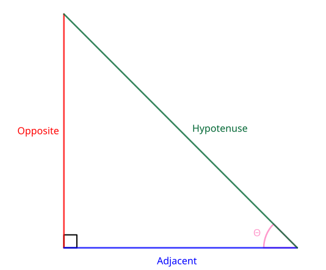

Trigonometric Ratios

What we are going to do with this triangle
In our right triangle above, the hypotenuse refers to longest side of the triangle, which is always directly across the right angle. Adjacent refers to the side that is right next to the angle in question $(\theta)$, that isn't the hypotenuse. Opposite refers to the remaining side that is not adjacent to the angle $\theta$. The opposite side can also be seen as the side directly across the angle $\theta$.
Since trigonometry is all about exploring the relationship between the sides of triangles and it's angles. There are three main trigonmetric ratios that are used to denote the relationship between an angle and the sides of a right triangle.
Sin, Cosine, and Tangent
That's it! These are three trigonometric ratios used (so far), and all it denotes is a relationship between an angle of a right triangle and and two certain sides of it. sin (pronounced sign) represents the relationship of angle with it's opposite side and it's hypotenuse. cos (pronounced co-sign) represents the relationship of an angle with it's adjacent side and it's hypotenuse. tan (pronounced tangent) represents the relationship of an angle with it's opposite side and it's adjacent side.